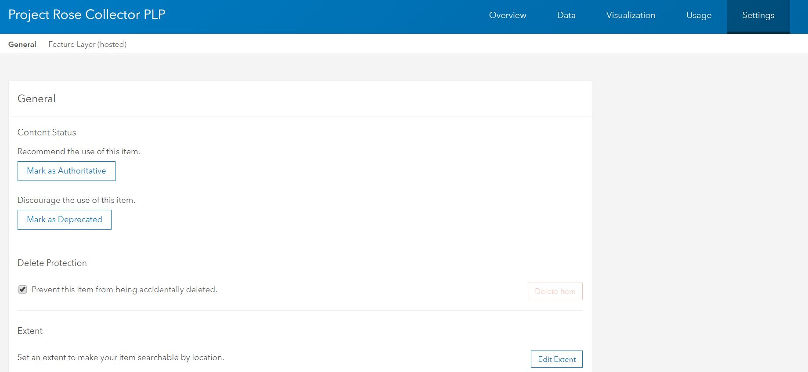
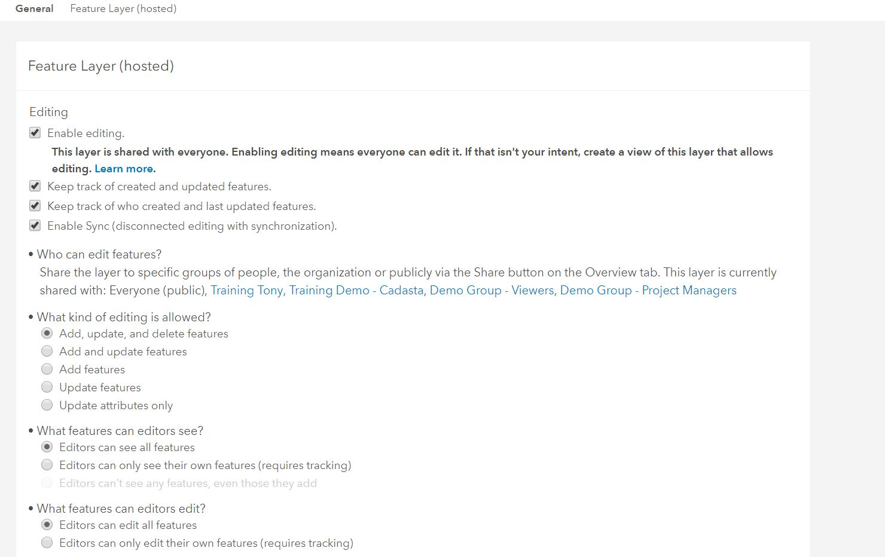
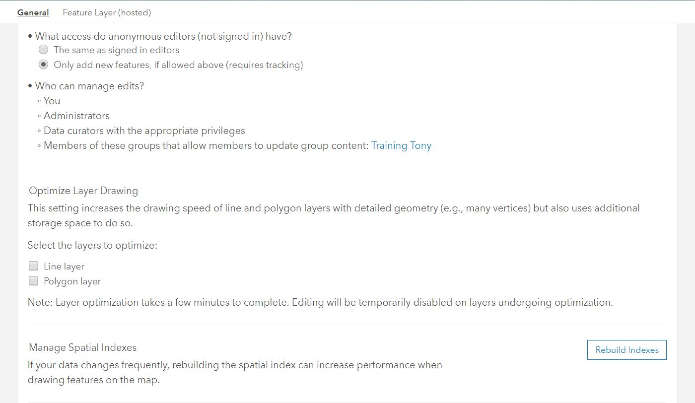
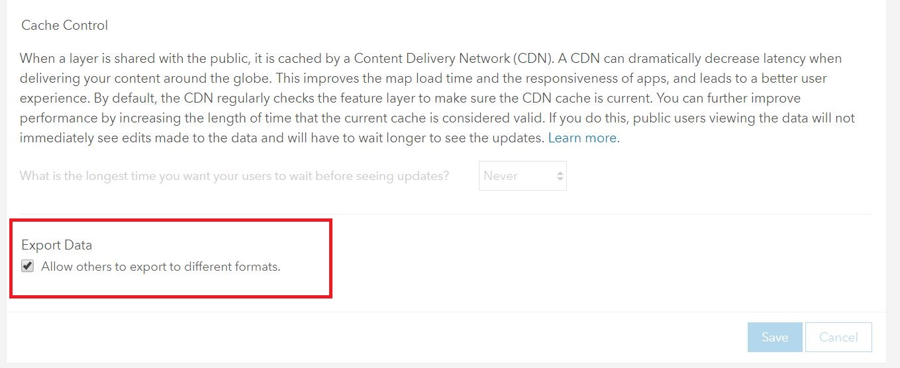
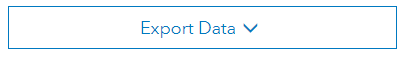
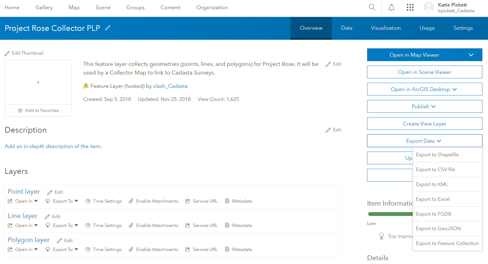
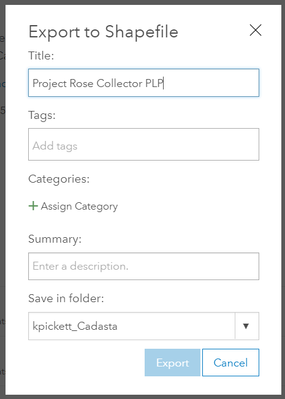
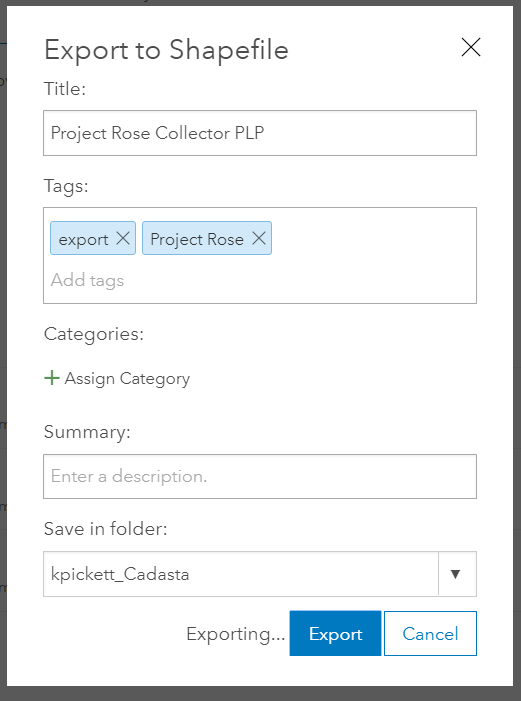
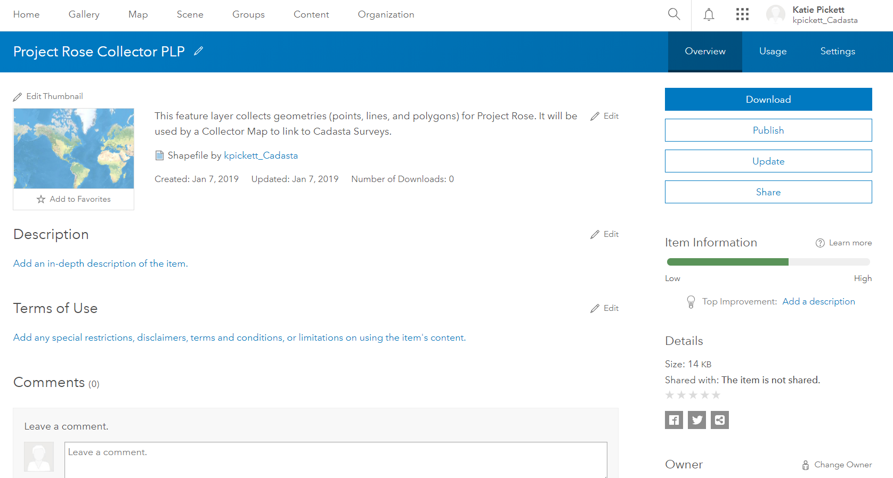
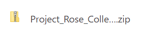

Purpose
This page will explain how to export a feature layer in ArcGIS Online
Requirements
- You will need to have a username and password set up for you by a Cadasta team member. If you do not have a user please contact support@cadasta.org
- You will need to sign to your account - see Introduction to your account for a reminder
- You will need to be the owner of the feature layer. For further assistance please contact support@cadasta.org
Steps
Navigate to the desired Feature Layer
Go to the Settings tab and make sure the settings are the same as below:
   
Go to the Settings tab

Review the following screenshots and make sure the settings are the same:


If you have made any changes press the Save button
Click Export Data

Click Export to Shapefile 
See Export to Shapefile window

Type in a Title, one or more Tags, and choose a Folder
Note: The folder is on ArcGIS Online and not on your computer or device 
Click Export
See the resulting exported file page 
Click Download
The file will download as a zipped file
